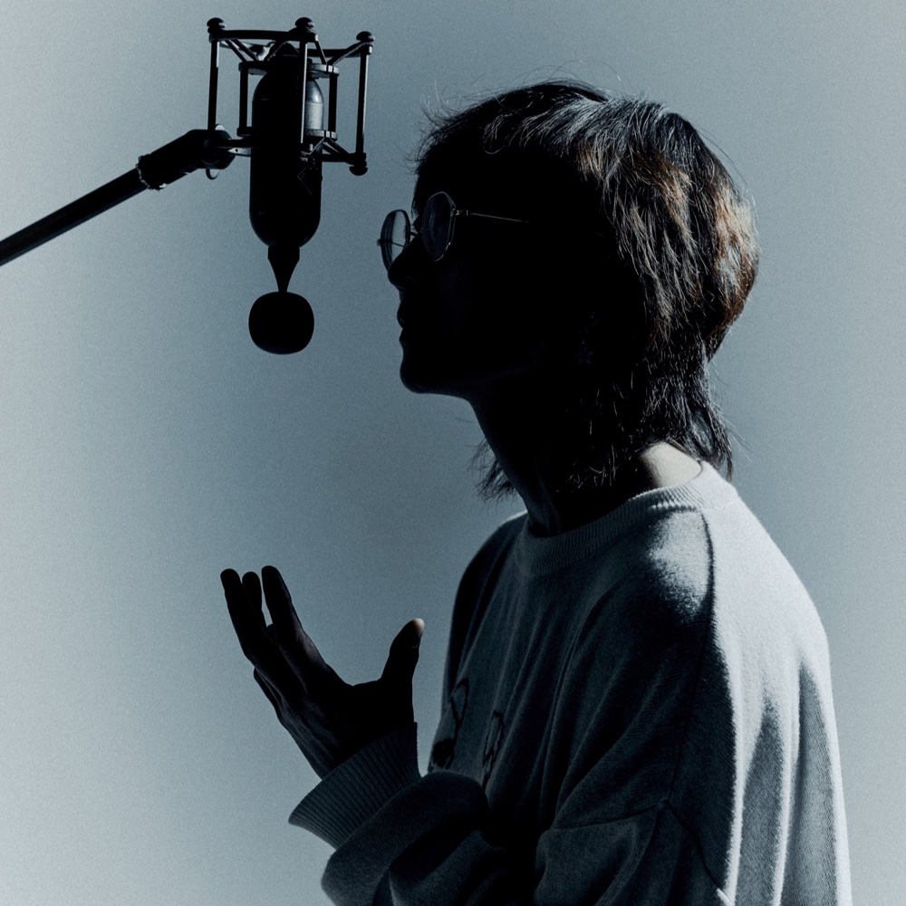
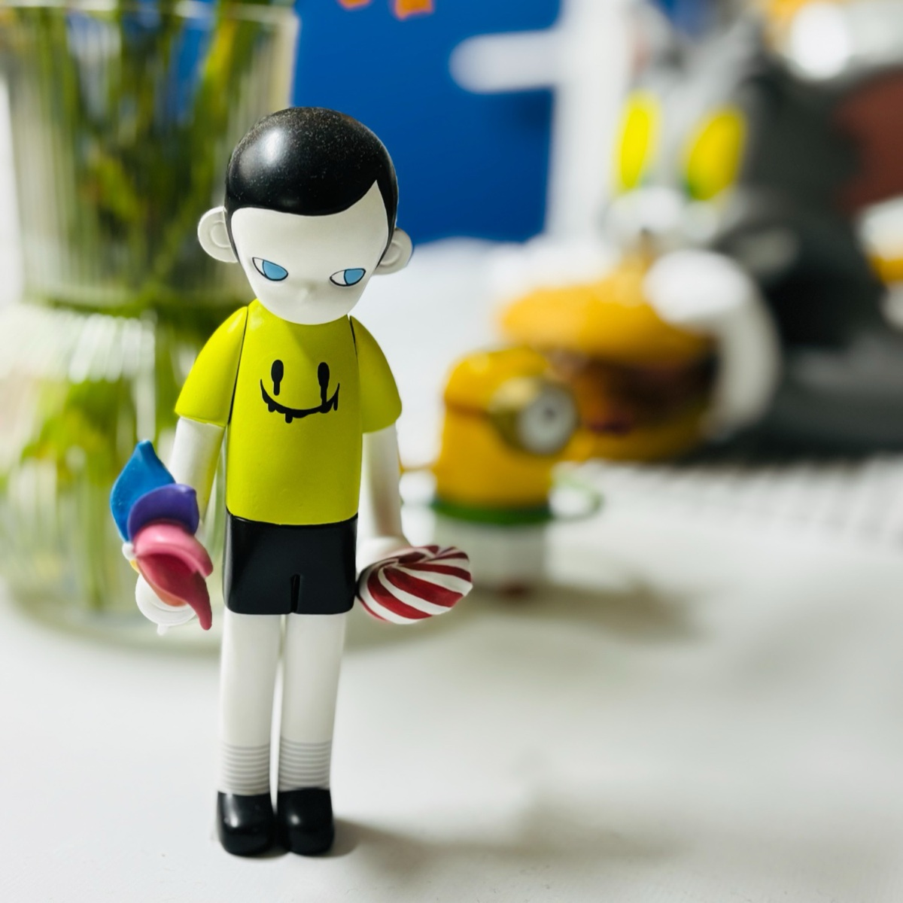

About · Since 2021 · Seoul
Knock On.
문을 조심스럽게 두드리고,
들어가도 되겠냐고 묻는 일.
무엇인가 시작하기 전의 두근거림과 설렘...
마치 첫사랑 같은.
2021레이블 설립 · 5월
4Artists
02Official Catalogue
05ReleaseLab Season 1 발매
2021년, 레이블을 시작하며
"앞으로 노크온 레코드는 뜻이 맞는 아티스트들과 함께,
그냥 하고 싶은 건 해도 된다고, 계속 가도 된다고 새 힘을 주는 곳이 되고 싶다.
혼자보다 언제나 '우리'가 더 재밌다."
Timeline
- 2021.05노크온 레코드 설립
- 2021.06이른 아침을 먹던 여름 결성Mars x Narr
- 2021.09과카몰리 유니버스 「Little Yellow Boy」 발매No. 001
- 2024.11'누구나 할 수 있는, AI 음악 만들기' 시작AI 음악 강의 · 워크숍
- 2025.04'누구나 할 수 있는, AI 음악 만들기' 오픈채팅 개설지금의 노크온 AI Studio 커뮤니티
- 2026.03KnockOn AI Studio 오픈강의와 커뮤니티를 확대한 브랜드
- 2026.03박지은(MyMars) 「말할 수 없는 것.」 발매No. 002
- 2026.08노크온 릴랩 시즌 1 출범참가자 20명 · 10월부터 5개 발매
- 2026.11북촌홍반장 「한곡안부 01. 짱구와 커피를」발매 예정
Team

Founder · Producer
박지은(MyMars)
숨뮤직 대표 · Guitarist · Producer · Composer & Arranger
25년 차 음악 프로듀서이자 기타리스트, 작편곡가. 숨뮤직과 노크온 레코드, KnockOn AI Studio를 운영하고, 글로벌사이버대학교 방송연예학과 특임교수로 'AI뮤직창작'을 강의합니다. 영화·드라마·광고·웹툰 OST와 AI 애니메이션 음악감독으로 일해 왔습니다.

Creative Director
김이도
노크온 레코드의 크리에이티브 디렉터. 「말할 수 없는 것.」의 크리에이티브 디렉션을 맡았습니다.
Side A
KnockOn
Records
뜻이 맞는 아티스트들과 음악을 만들고 정식으로 내는 독립 레이블. 공식 카탈로그는 여기에 모입니다.
Releases →Side B
KnockOn
AI Studio
AI 음악의 흐름을 전하고, 아티스트 기획부터 발매·홍보·정산까지 함께 겪어 보는 실전 스튜디오. 노크온 릴랩이 여기서 시작됩니다.
AI Studio →Press
- 뉴스인 · 2026.03.17기타리스트 박지은(MyMars)의 디지털 싱글 「말할 수 없는 것. (Silence Between Words)」기사 보기 ↗
- 뉴스인 · 2025.10.26"악보 몰라도 프로 수준 음악 만든다"… 현직 프로듀서의 AI 작곡 비법 공개기사 보기 ↗
- 뉴스인 · 2025.06.19‘숨뮤직 × 북촌탁구’ 스페셜 워크숍: 생성형 AI로 여는 음악 창작의 미래기사 보기 ↗
- 뉴스인 · 2021.10.07무조건 신나는 음악을 전달하고 싶은 ‘과카몰리 유니버스’와의 인터뷰기사 보기 ↗
- 데일리투데이 · 2021.09.28[정지영의 ‘문화’ 취재] ‘과카몰리 유니버스’, 첫 싱글 ‘Little Yellow Boy’ 발매기사 보기 ↗